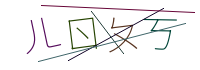
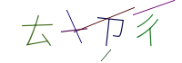
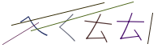

Bopomofo Captcha
為台灣使用者打造的 Laravel 驗證碼套件 — 用注音符號取代英數字，
使用者用注音輸入法把看到的符號打回去就完成驗證。
A Laravel CAPTCHA that renders Taiwan Bopomofo (Zhuyin) glyphs instead of Latin characters.
實際樣張 Live samples



特色 Features
🇹🇼 在地化驗證
從 37 個注音符號（聲母＋韻母）隨機出題，對機器人更陌生、對台灣使用者零負擔。
🔀 兩種模式
傳統 Session 模式，以及給 SPA / 行動端的無狀態 API 模式（JSON key + base64 圖片）。
🛡️ 安全設計
答案 bcrypt 雜湊、單次使用即銷毀、check_api() 時序洩漏防護、路由級 throttle。
🎨 四組 Profile
default、flat、mini、inverse，尺寸、干擾線、模糊、反相等參數皆可調。
快速開始 Quick start
1
安裝套件（PHP 8.1+，Laravel 10 / 11 / 12）：
composer require hengineer/bopomofo-captcha2
在 Blade 表單裡放上驗證碼：
{!! bopomofo_captcha_img() !!}
<input name="captcha" placeholder="請用注音輸入法輸入上方符號">3
在 Controller 驗證：
$request->validate([
'captcha' => 'required|bopomofo_captcha',
]);4
SPA / 行動端改用無狀態 API 模式：
GET /bopomofo-captcha/api/default
→ { "key": "bopomofo_captcha_xxx", "img": "data:image/png;base64,…" }
$request->validate([
'captcha' => 'required|bopomofo_captcha_api:' . $request->input('key'),
]);